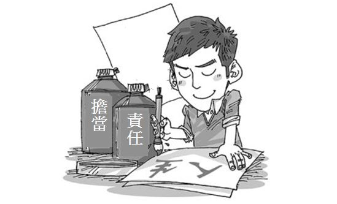
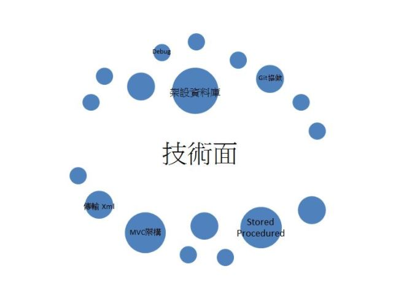
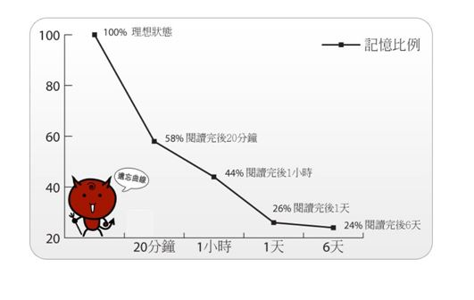
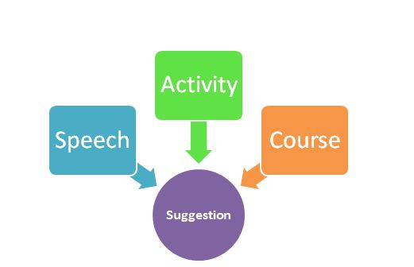

此次實習對我來說是個很棒的工作體驗，從一個學生的角色轉移到公司內部一個成員，在心境轉換的部分上，讓我擁有更多的責任感，在學校上課常常睡過頭或是遲到，但是近到公司卻不敢有一絲馬虎，同事和同事之間和老闆下屬之間有一定的牽絆及壓力，也因為瞭解自己代表團隊裡頭的一個齒輪，要是有任何缺失或是失敗，其他人就必須代替我的部分運轉，需要更多心血和力氣，因此在做事情上也會更為嚴謹。
別於同學之間有不同課程會見不到面，我們是需要長期相處的關係，在工作態度上，我會努力做好自己分內的工作，對自己負責，同時也是對同事和主管的交代，不想要拖累其他人，加上對自己的要求，成為推動自己持續進步的動力
技術面
在本次實習當中，技術面學習到如何架設一個完整的網站，剛來到這個公司，技術顧問就教導我們架設資料庫、Git 協做概念、MVC 架構出一個有 CRUD 的簡單網站，當開始接觸公司的作業後，加入更多運輸業領域的專業知識，撰寫更龐大的系統，學習到很方便的 Store Procedure，很多重複的查詢就不用一而再再而三的浪費時間重寫，也學習到傳輸 Xml 檔案的方法，固定的格式可以使用取代欄位值得方法完成，當然，在程式語言上的使用也更加的熟悉，包含在學校不太了解的繼承、多型等等概念也透過實做而有進一步的認識。
實習後我還學習一項很重要的技能，就是正確、徹底的使用開發工具，我在來到中菲行以前，從來沒有使用過設定中斷點來 Debug，這雖然很可笑但是我發現很多同學友和我一樣的狀況，現在回頭來看我也是很好奇我是如何修完成式設計一、二的課程，進到公司有很多前輩領導後，才瞭解為什麼 Visual Studio 為什麼是地表最強開發工具，跳到定義功能、自動化產生屬性、函數等等，真的很方便，俗話說，工欲善其事，必先利其器，有效的操作、利用工具，可以減少很多繁瑣步驟，大大提升工作的效率。
非技術面
在非技術面上，學習到與同事間的和睦相處，深深體會到團隊合作的重要性，因為 CRPMIS 部門有一半的同事位在上海，因此我們開會都會使用 Skype 進行討論，在分工合作上就會更為重要，我們公司就使用甘特圖記錄每個人的代辦工作、所需時間等等，可以一目瞭然彼此的進度為何，此時，溝通能力的重要性就格外明顯，記得有一個禮拜的任務是完成海運訂單查詢的前端頁面，而與我搭配的後端工程師是上海的同仁 Wade，他在中菲行上海部門算是很資深的工程師，我在製作過程中遇到一個問題，於是我請教他幫我解決，我們利用skype 分享畫面的方式一步步找到問題點，最後成功解決，如此一來一往花費彼此二十分鐘，在這種情況下，溝通成為我們之間的唯一橋梁，問題敘述的好可以大大減少雙方的時間成本，理解到優良溝通的重要性。
在公司中總是有很多很厲害的人，我從他們身上看見、學習到很多東西，我們部門有邏輯超強的主管和最強工程師，我總是很佩服他們。我的主管也是元智大學畢業，我認為他的人格特質是心思細膩、總是為他人著想等等，身為一個管理者，他總是能夠在大家像無頭蒼蠅的討論的時候，適當的跳脫這個渾沌框框，提出有效的解決方案點醒大家，每每在大家報告專案，總是可以提出一針見血的問題，指出大家沒想到的疏忽，讓大家重新思考，思緒重新排列組合，在他身上我學到理性思考，當大家往前衝的時候，先站在原地看看我們為了什麼目標而衝，才不導致事倍功半，另一個是批判性思考，對任何事物都抱有懷疑的態度，能夠提出有力的觀點，擁有自己堅定的立場。另外一位資深工程師，他對寫程式很在行，我發現他工作的時候很專心，不只是工作，就算是睡午覺或是休假的運動都是很有效率的處理每件事，時間到了該做什麼事就做什麼事，從他上我學到同一時間只做一件事，而且是百分之百的專注，這算是對自己的一種要求，也算是把一件事發揮到極致。
在工作時候的學習與在學校時候的學習差異很大，在學校會有教科書，吸收知識都是照表操課，教授教課學生學，但是開始工作後，我發現在公司要學習是要自己主動去要求的，方式也百百種，沒有一個標準，這時候怎麼問、怎麼吸收就變得很重要。在中菲行待一陣子後，我學到勇敢問問題，台灣的學生不像美國的學習文化那麼敢發問，總是害怕自己問錯、回答錯，或是自己的基礎不夠，同時也很在意他人的眼光，因此鮮少有主動提出問題的情況發生。而我也練習很久，即使問題如何基礎、簡單，都要放下自尊心的發問。一開始常常在問完還是不了解對方再說什麼，或是不知道該如何做，就摸摸鼻子自己回去摸索，而我在吃過苦頭後學到，如果在對方回答過程中，理解上有稍稍遲疑就要馬上提出，繼續追問下去，在當下不僅要理論懂，更要設想在實際面操作時候可能會遇到的情況，才不會導致一而在再而三問類似的問題，對方的耐心會被沒準備的發問磨光。
我認為在程式的撰寫技術上需要提升，不僅如此，學習的方法和發問的方式也是很重要的，依照艾斯浩賓的人類遺忘曲線表示，遺忘的速度並不是均勻的，一開始的遺忘速度最快，後來則是逐漸變慢，因此我認為在請教別人時候，需要把別人提供的解決方法記錄下來，當再次遇到時候可以拿出來查找，或是關於專業領域的知識，當熟悉越來越多次，依照艾斯浩賓遺忘曲線，會越來越不容易忘記，不僅會讓主管對你印象好，也會對自己有所交代。
首先真的很感謝系上有提供這個機會讓我們到真實的業界中體驗瞭解我們的需要學習、 加強的技能，我認為系上可以多舉辦一些活動、演講或是開設課程是有關資訊業中各個角色的比對，方便學生多了解業界中對者些角色期待的樣子、所需要的技能，可以使我們更有方向的前進，另外加強實作也是很重要的，可以一步一步加強作業的難度，還有開發工具的應 用也是一大重點，能淋漓盡致的使用一定會差很多的！
開始實習後，發現學校學的與公司需要的真的有一段差距，建議系上可以針對公司行號 愛用的開發工具，多開幾門程式設計及資料庫相關等課程，基礎的開發工具增加為必修課程；而難度較高的開發工具，可作為選修讓有興趣的同學可以自行選修。
